Book Info
- Pages — 99
- Genre — Literary Fiction · Historical Fantasy · War & Military Fiction
A cosmic observation program has a name for what it's about to watch: Case 4099, filed under Subject World 812-G, Mundane Class. What it actually contains is smaller — a glass jar of pink candy, smuggled into a Heian-era court by an envoy posing as a traveling confectioner, and given out one piece at a time to whoever the court's reigning arbiter of rank decides, that day, has earned it.
The Principal Handmaid is the sole judge of who matters at court, and for nineteen years her rulings have gone unquestioned. A poet, a falconer, a gambler, a seamstress, a pair of twin gardeners — each receives a bead for some small grace, and each discovers, in time, that being noticed by the Handmaid is its own kind of death sentence. When her Second Handmaid is passed over once too often, five women quietly agree that an insult unpriced is an insult unpaid, and the court's silent arithmetic turns, without a single banner raised, into a war conducted entirely in forgery, poison, and fire.
Forty-two names, by the end. The Ledger of a Single Sweetness is a reconstruction — read from the inside, filed from the outside, and honest about the gap between the two.
Characters

Tsuguo
Wins a dice game against three ministers at once — and becomes a target for it.

Yorinaga
A hawk brings back a warm hare. Then a fall no one examines too closely.


Kotone
Two beads for intercepting a letter — then a forged one ends her instead.

The Principal Handmaid
The one person at court whose word decides who matters — and who pays for it.

Rin
Corrects the same character eleven times in one afternoon — and it still wasn't enough.
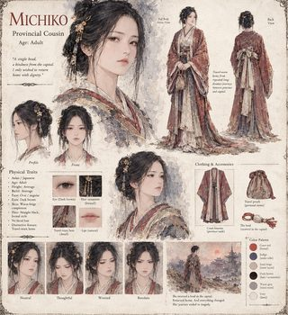
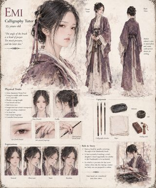
Emi
Quietly corrects the Handmaid's brush angle — and pays for the resemblance later.
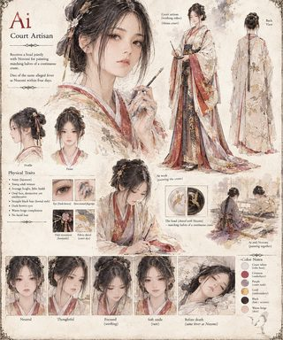
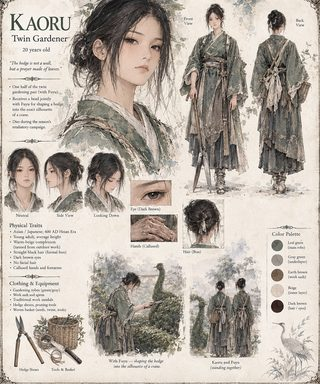
Kaoru
Shapes a hedge into the likeness of a crane with her twin — and doesn't survive the season.
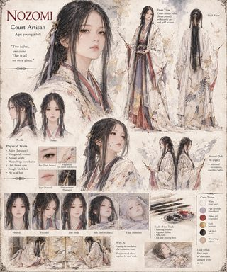
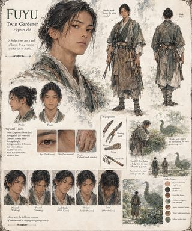
Fuyu
Shapes a hedge into a crane with his twin — and is left to grieve her alone.

The Observer
Enters the court as a candy seller, and leaves with a recommendation no one adopts.
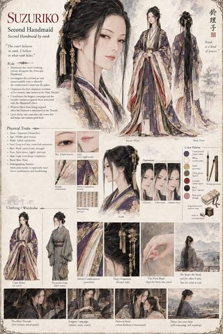
Suzuriko
Passed over once too often, she turns exclusion into a nine-year architecture of debts.
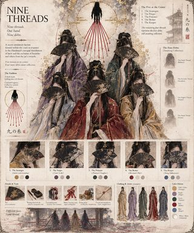
The Nine Threads
Nine debts, one hand, and only five names anyone was ever given.
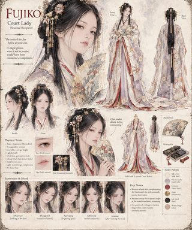
Fujiko
A compliment, made too precisely, turns out to have been noticed after all.
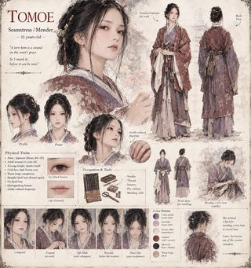
Tomoe
Mends a torn hem in record time — and is remembered for it, in every sense.
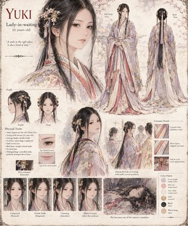
Yuki
One of three ladies-in-waiting whose whole distinction was smiling in the right place.
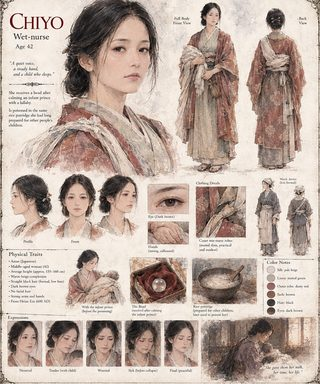
Chiyo
Calms an infant prince with a lullaby, and is fed her own poisoned porridge for it.
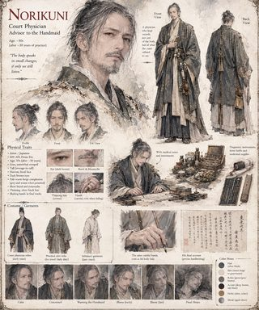
Norikuni
Keeps records of what the court refuses to see — and is poisoned for the noticing.

The Sweets
A glass jar of about two hundred pink sweets — the whole engine of the court's collapse.
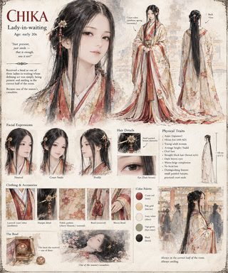
Chika
One of three ladies-in-waiting rewarded for nothing but standing in the right place.
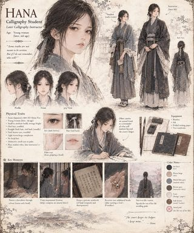
Hana
Keeps her own private ledger of who received a bead, and why — and survives the season.
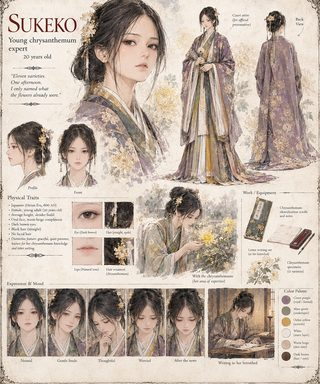
Sukeko
Names eleven chrysanthemum varieties in a single afternoon, and writes home to her betrothed.
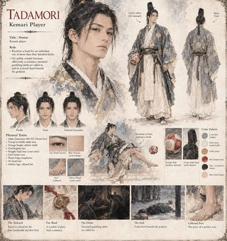
Tadamori
An unbroken run of four hundred kicks earns a bead — and a debt collector's excuse.
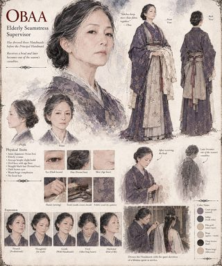
Obaa
Has dressed three Handmaids before this one — and becomes one of the season's casualties too.
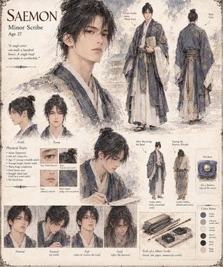
Saemon
A flawless copy of a sutra earns a bead — and doesn't survive the Harvest.
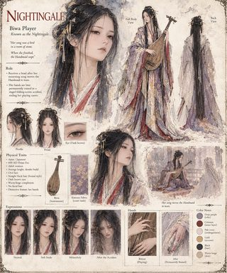
Nightingale
A mourning song moves the Handmaid to tears — and costs her the hands that played it.
Scenes
-
The Principal Handmaid tries the pink beads.
-
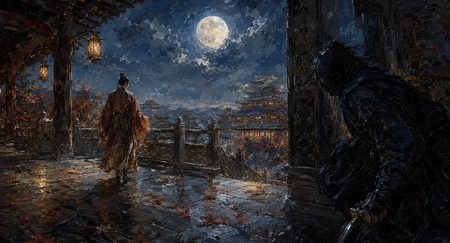
An assassin stalks Nariyuki.
-
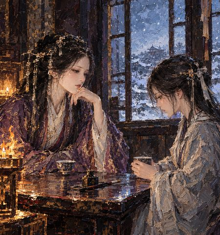
The Principal Handmaid, on calligraphy.
-

The tower burns.
-
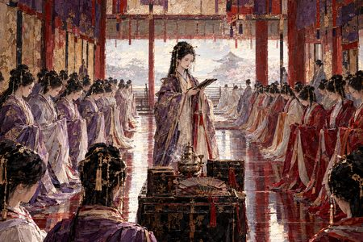
The Principal Handmaid's court.
-
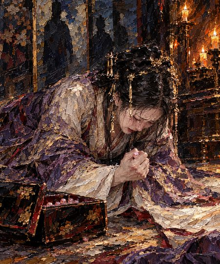
Grief, after the execution.
-
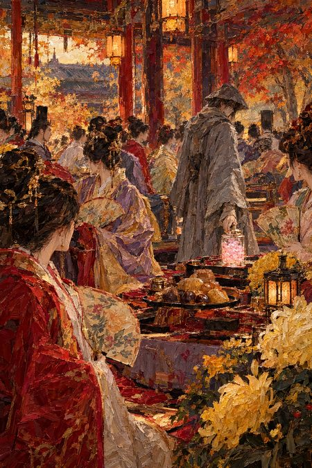
The Observer leaves the candy.
-
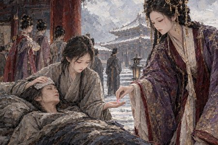
The Principal Handmaid gives a bead to Hana.
-
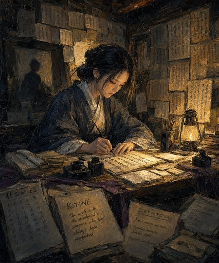
The Nine Threads forge Kotone's hand.
-
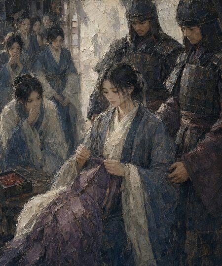
The execution.
-
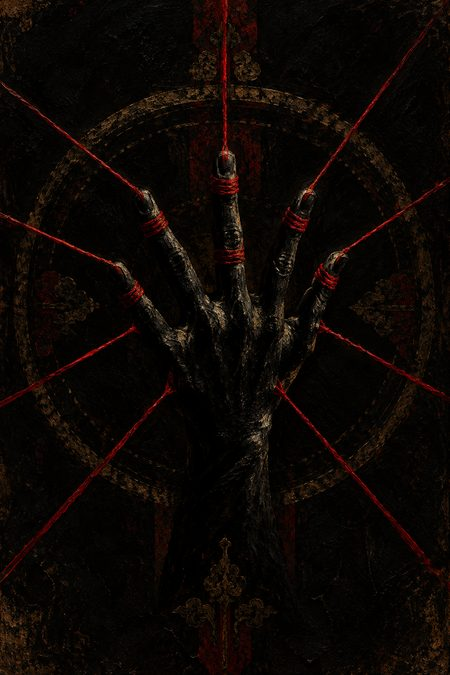
The Nine Threads' emblem.
-
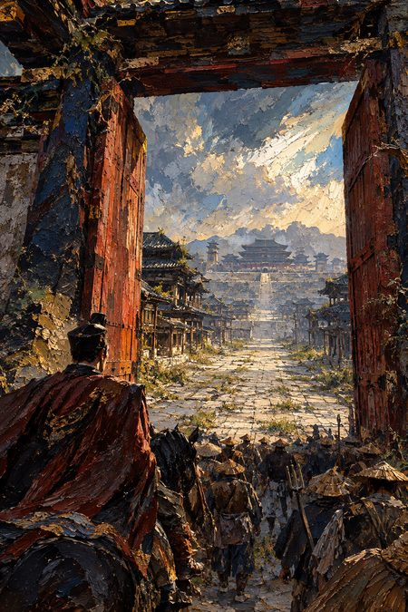
Arriving in the empty court.
-
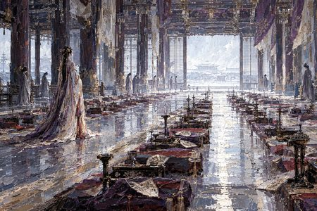
The Principal Handmaid, and the empty court.
-
Norikuni, keeping his records.
-
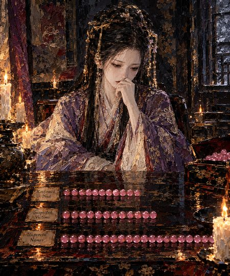
The Principal Handmaid lays out the beads.
-
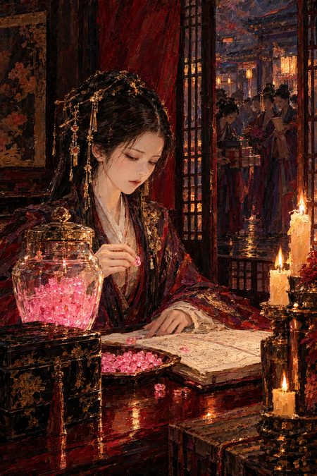
The Principal Handmaid decides where the next bead goes.
-
The final violet dress, before the burning.
-
The Nine Threads, gathered.
-
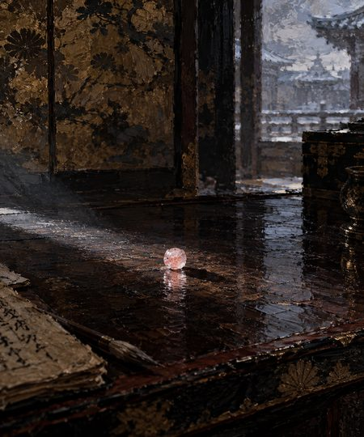
The single bead.

{kind=link}
{kind=link}
{kind=link}
{kind=link}
{kind=link}
{kind=link}
{kind=link}
{kind=link}
{kind=link}
{kind=link}
{kind=link}
{kind=link}
{kind=link}
{kind=link}
{kind=link}
{kind=link}
{kind=link}
{kind=link}
{kind=link}
{kind=link}
{kind=link}
{kind=link}
{kind=link}
{kind=link}
{kind=link}
{kind=link}
{kind=link}
{kind=link}
{kind=link}
{kind=link}
{kind=link}
{kind=link}
{kind=link}
{kind=link}
{kind=link}
{kind=link}
{kind=link}
{kind=link}